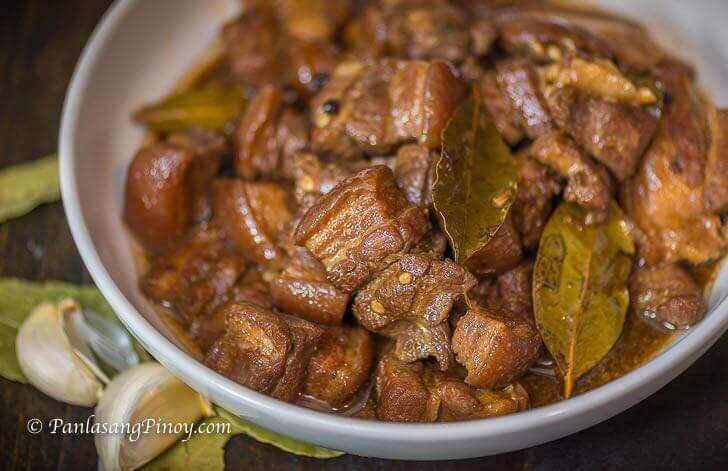

home
Pork Adobo

What is Pork Adobo?
Pork Adobo, also called adobong baboy, is pork cooked in soy sauce, vinegar, garlic, bay leaves, and whole peppercorns. The word adobo
comes from the Spanish word adobar, which means to marinate. The name came from Spain, but the cooking method was already in the Philippines
long before that. Filipinos cooked meat with vinegar and salt because it helped preserve food in a hot climate.
Adobo is widely considered the unofficial national dish of the Philippines. It does not have an official government declaration,
but it is one of the first dishes many Filipinos mention when talking about our food. The first written record goes back to 1613,
where it was called adobo de los naturales. Every region has its own version. Some cooks add coconut milk (adobong baboy sa gata).
Ingredients
- 1 kg pork belly or pork shoulder, cut into chunks
- 1/2 cup soy sauce
- 1/4 cup white or cane vinegar
- 1 cup water (or adjust for braising)
- 1 head garlic, crushed or minced
- 3 to 5 dried bay leaves
- 1 to 1.5 teaspoons whole black peppercorns
- 1 tablespoon cooking oil
- 1 teaspoon sugar (optional, to balance tartness)
- Salt or fish sauce (patis) to taste
How to Cook Pork Adobo?
- Sear the pork: Heat the oil in a heavy-bottomed pot or wok over medium-high heat. Brown the pork pieces on all sides until lightly golden.
- Sauté aromatics: Add the crushed garlic and cook for about 1 minute until fragrant. (You can also add onions here if you prefer a richer base.)
- Simmer the meat: Pour in the soy sauce, water, bay leaves, and whole peppercorns. Bring to a boil, then lower the heat, cover the pot, and simmer for 40 to 60 minutes until the pork is tender.
- Add the vinegar: Pour in the vinegar. Do not stir the pot immediately; let it boil uncovered for 3 to 5 minutes to cook off the harsh sour bite.
- Thicken the sauce: Stir everything together. Add a pinch of sugar or fish sauce to adjust the seasoning. Simmer uncovered until the sauce reduces to your desired thickness.
- Serve: Rest for a few minutes and serve hot over white jasmine rice.